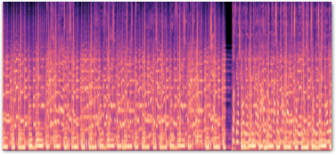

Sylvester Cardorelle
Projects
In My Feelings: Mood Prediction App
Experiment using K-Means Clustering to infer underlying mood and Random Forest Classifier to predict on unseen songs.

Music Recommender System using Deep Learning
Aim was to solve the cold-start problem seen in classical recommender systems using collaborative filtering.